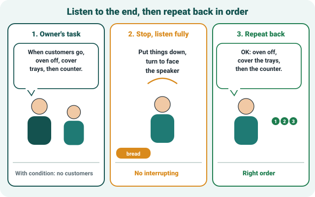

K1 · Listening and understanding › Level 1 Exploring
Listen to the whole instruction, repeat it back, and do each step in order
This is a Level 1 (Beginner) lesson for people starting their first part-time job or internship. After it, take the Level 2 lesson: Take instructions and confirm them before you start.
1. Objectives
- Listen to a short instruction without interrupting, then repeat it back in your own words.
- Follow a 3-step instruction in the right order.
2. Retrieval warm-up
This is the first lesson in the extra series. Think about your own experience and answer in your head.
- The last time you got a task wrong, which part did you forget?
- At that moment, what were you doing while the other person was talking?
3. Explanation
On your first days at work, you get many short instructions. "Wipe table 3, change the cloth, then tell me." It sounds easy. But new people often forget a step, or do the steps in the wrong order.
The usual reason: you listen halfway, then start thinking about something else. Or you say "OK" before the other person has finished.
Three habits of a good listener at work:
1. Stop and look at the speaker 2. Listen to the end 3. Repeat back in order
1. Stop and look at the speaker. If you are carrying something or holding your phone, put it down for a few seconds. You cannot count money and remember three steps at once.
2. Listen to the end. Do not interrupt, and do not say "I know". The most important step is sometimes at the end of the sentence.
3. Repeat back in order. Say it again in your own words. Count on your fingers if it helps. "OK, I wipe table 3, put a new cloth on, then tell you."
Why repeat it in your own words? To rephrase something, you have to understand it, not just remember the sounds. The person giving the task can also hear where you got it wrong, and correct it at once.
When you do the task, keep the order. Many tasks have an order for safety or hygiene reasons. For example: unplug a machine before you clean it. If the order seems strange, ask why instead of changing it yourself.
Three cases when you get an instruction
- 3 steps or fewerListen to the end, repeat back in order, then do it.
- More than 3 stepsWrite it down at once in a notebook or on your phone, then repeat back.
- The order seems strangeStill follow the order, and ask the reason when you get a chance.
How to write tasks down is covered in Track tasks and flag delays early.
Listening well is not a talent. It is a habit you can build in a few weeks.
4. Workplace example
Hypothetical scenario. Leo, 17, works weekends at a small sandwich shop. The owner gives him a task while he is stacking bread rolls.
Owner: "Leo, when the customers have gone, switch off the oven, cover all the filling trays, and only then wipe the counter."
Leo does this:
- He puts the rolls down and turns to listen.
- He waits until the owner finishes, without cutting in.
- He repeats back: "OK, when the customers have gone, I switch off the oven, cover the filling trays, then wipe the counter."
The owner nods. At the end of the shift, Leo does the three steps in that order.

Why this works: Leo also repeats the condition "when the customers have gone". Covering the trays before wiping the counter keeps cleaning water away from the food.
5. Practice
Hypothetical scenario. You work part-time in a convenience store. The shift leader says: "Check the dates on the yoghurts in the fridge. Put any with less than 2 days left in a separate basket, then write the number in the log book."
Write how you would repeat it back, in the right order.
Hint 1
There are 3 tasks: check, put aside, write in the book. There is one condition: less than 2 days.
Hint 2
Start with "OK, I…" and go through the steps one by one.
Model answer
"OK, I check the dates on the yoghurts in the fridge. Any with less than 2 days left go in a separate basket. Then I write the number in the log book."
6. Self-check
Choose an answer. Every option has an explanation.
Question 1. Your manager is giving you a task and you think you already understand. What should you do?
-
Not quite. The important step may be at the end of the sentence. Interrupting makes it easy to miss something.
-
Correct. Correct. Listening to the end and repeating back lets both of you check you understand the same thing.
-
Not quite. You have not heard everything, so you may miss a step or get the order wrong.
Question 2. Why should you repeat an instruction back in your own words?
-
Not quite. The goal is not to sound good. It is to check that you understood correctly.
-
Correct. Correct. Rephrasing makes you understand, and lets the other person correct any gap at once.
-
Not quite. Repeating word for word is not wrong. But it does not show that you understood.
Question 3. You are told: unplug the blender, then remove the jug to wash it. You think removing the jug first would be faster. What do you do?
-
Not quite. The order may be there for safety. Do not change it yourself.
-
Correct. Correct. Keep the order, then ask so you understand. Unplugging first prevents accidents.
-
Not quite. Leaving a task half done solves nothing. Ask for the reason instead.
Question 4. An instruction has 6 steps. What helps you not to forget?
-
Not quite. Six steps are easy to forget, especially when you are busy.
-
Correct. Correct. Instructions longer than 3 steps should be written down straight away.
-
Not quite. Asking again and again wastes both people's time. Write it down from the start.
7. Reflection
- When someone gives you a task, what most often distracts you?
- What will you do differently next time so you listen to the end?
8. Real-world application
Over the next 7 days, each time you get a short instruction, repeat it back in order before you start. Count how many times you do it. Note one time when repeating back showed you had misunderstood.
9. Metadata
| skill | K1 · Listening and understanding |
|---|---|
| level | Level 1 · Exploring |
| group | N2 |
| framework_map | WEF: Empathy and active listening; CSfW: 2a Communicate for work; LifeComp: S1 Empathy; S2 Communication (reference only) |
| original | Vietnamese version |
| updated | 2026-11-14 |
Finish the lesson
Mark it as done and the site suggests reviews after 1, 3 and 7 days. The data stays on your device only.
Suggested reviews: